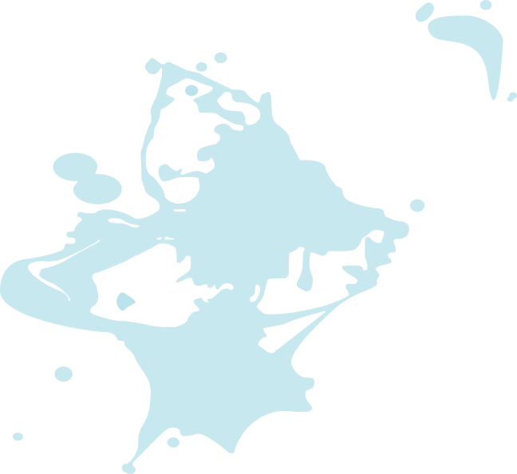
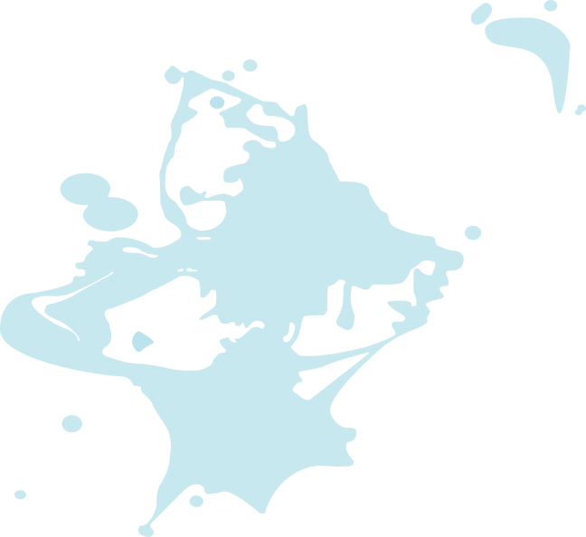

Je suis ...
Un futur developpeur multidisciplinaire
Je suis finissant de la TIM et prêt à me projeter à mon meilleur.
Je fais de la programmation, de l'animation, du design et du pixel art. J’aime apprendre et développer ma créativité.
Je suis ouvert à la critique car cela me permet de m’améliorer.
 
